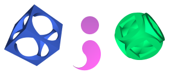

SILLY is an expression oriented language. Everything you write in SILLY is considered as an expression. Even the whole script can be considered as an expression that defines a scene though, in this case, the syntax is a little different from the regular expression syntax in SILLY.
The most common expression in SILLY is the object call, which is interpreted as the instantiation, or creation, of an object from a given class. This is how an sphere is created in SILLY:
sphere([0, 0, 0], 1, plastic(red))
To read the previous expression, you must know beforehand that spheres have a constructor receiving a vector for the sphere's center, its radius and the material the sphere is made of. There's an alternative syntax for object creation, as shown in this variant:
sphere(
center: [0, 0, 0],
radius: 1,
material: plastic(red))
In this case, we have used named parameters, instead of positional parameters (line feeds are not mandatory). Both styles can be mixed, as long as positional parameters appear before any named parameter:
// OK sphere([0, 0, 0], radius: 1.0, material: plastic(red)); // Wrong! Material must include the parameter name. sphere(center: [0, 0, 0], radius: 1.0, plastic(red));
The goal of a SILLY script is the creation of a scene object. We could have designed SILLY in a uniform way, and use the previously explained syntax for creating the scene. Instead, we have provided an easier to remember syntax for this task:
sampler sampler-object camera camera-object background background-object ambient ambient-object-list lights light-object-list media media-object objects shape-object-list end.
This could be viewed as a variant of object creation with named parameters. For more details about scenes and its parameters, check the Scenes help topic.
As you have surely noticed, SILLY needs object lists from time to time. Objects in such lists can be separated using both commas and semicolons. You can mix both separators without restrictions:
A(1, 2, 3), B([0,0,0]); C(123); D(rgb 0.1)
Why do we allow two different separators? The answer is: refactoring. Suppose you create two objects in a scene:
sphere([-1, 0, 0], 0.5, plastic(red)), sphere([+1, 0, 0], 0.5, plastic(green))
Let's say we must repeat this pair several times along the Z axis. Since we used a comma to separate them, it's easier now to nest both objects inside a union:
union(
sphere([-1, 0, 0], 0.5, plastic(red)),
sphere([+1, 0, 0], 0.5, plastic(green)))
loop 5 by 2^Z;
As a matter of fact, we suggest to use commas as separators whenever it's possible. We still allow semicolons since it's the traditional separator in classic programming languages.
For more information on syntax, check these help topics:
Home | XSight Ray Tracer overview | Simple Instantiation Language | Scenes | Predefined shapes | Materials | Macros | Using XSight's Ray Editor